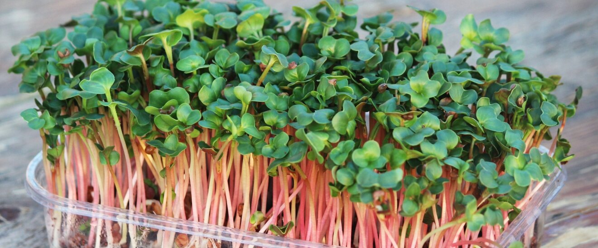

РЕДИС
Содержит большое количество витамина С и комплекс витаминов, минеральных элементов, тиамин, рибофлавин и эфирные масла. Улучшают пищеварение и обладают умеренным желчегонным и противоотечным свойствами. Употребление ростков редиса в пищу способствует улучшению состояния кожи и волос, общему укреплению организма.
Каротиноиды , содержащиеся в молодых растениях в период их активного роста, борются со свободными радикалами, разрушающими клетки организма. Микрозелень способствует улучшению пищеварительных процессов, является иммунным активатором (calorizator). Примечательно, что микрозелень полезна целиком – как листья, так и стебли содержат полезные вещества.
Микрогрины содержат природный антибиотик - фитонцид. Фитонцид уничтожает микроскопические грибки, рост патогенных бактерий и простейших Микрозелень намного полезней обычной зелени, концентрация витаминов и минеральных элементов в микрозелени в 10-20 раз выше.